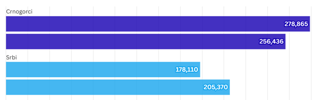
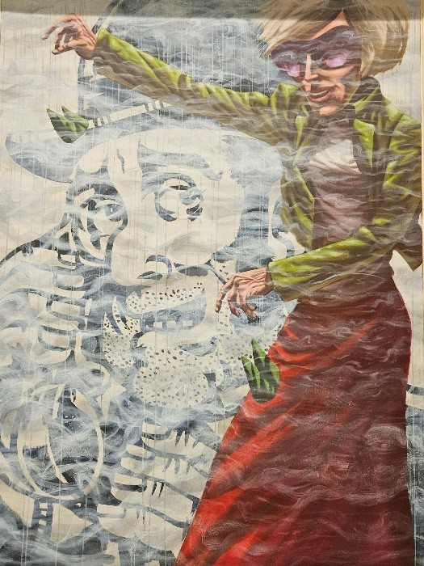

Kulturološki spisi o Srbima iz svih krajeva Crne Gore
Kulturološki spisi o Srbima iz svih krajeva Crne Gore
Kulturološki spisi o Srbima iz svih krajeva Crne Gore imaju za cilj da istražuju bogatu istoriju, običaje, tradiciju i identitet Srba koji su vjekovima živjeli na ovom prostoru. Takvi spisi obično obuhvataju različite aspekte života, uključujući jezik, religiju, narodnu muziku, narodne običaje, arhitekturu, kulinarstvo i svakodnevni život.
U Crnoj Gori, Srbi su značajna etnička i kulturna grupa, posebno u regionima poput Boke Kotorske, Zete, Morače, i sjevernih planinskih područja. Kulturološki radovi često ističu vezu Srba sa pravoslavnom verom, koja igra ključnu ulogu u njihovom identitetu, kao i značaj svetaca, crkava i manastira koji su centri duhovnog i kulturnog života.
Crkva Sv. Trojice u Grižici kod Rožaja
Jedan od važnih elemenata takvih spisa je i opis narodnih nošnji, tradicionalnih pesama i igara, te običaja vezanih za praznike, svadbe, krštenja i druge životne obrede. Takođe, posebna pažnja posvećuje se istorijskim ličnostima i događajima koji su oblikovali srpski identitet u Crnoj Gori.
U manjim mjestima Crne Gore, Srbi su prisutni u brojnim selima i manjim naseljima širom zemlje. Njihova prisutnost posebno je izražena u sjevernim i centralnim djelovima Crne Gore, gdje su očuvali bogatu kulturnu baštinu i tradiciju.
Manja naselja često imaju specifičan kulturni i jezički identitet, a Srbi koji žive u tim područjima zadržavaju jaku sponu sa svojom tradicijom, jezikom, vjerom i običajima.
Jačanje nacionalnog identiteta Srba u Crnoj Gori kroz upoznavanje sa sunarodnicima koji žive u drugim krajevima Crne Gore
Jačanje nacionalnog identiteta Srba u Crnoj Gori kroz upoznavanje sa sunarodnicima iz različitih krajeva može imati značajan uticaj na očuvanje i razvijanje kulturne baštine, tradicije i zajedništva. S obzirom na bogatu istoriju Srba u Crnoj Gori, povezivanje s drugim srpskim zajednicama unutar zemlje doprinosi jačanju osjećaja pripadnosti i nacionalnog identiteta I širenju mreže srpskog naroda izmedju opština u kojima žive.
Crkvena zastava pravoslavnog življa SPC
Ono sto je vazno pomenuti jeste jacanje nacionalni identitet. Nacionalni identitet ima za cilj da predstavlja temelj svakog naroda, stvoren istorijom, kulturom, jezikom, tradicijom i običajima. Srbi u Crnoj Gori, kao autohtona zajednica sa bogatom kulturnom i istorijskom baštinom, suočavaju se problemima očuvanja svog identiteta u danasnjem društvu. Jačanje nacionalnog identiteta Srba u Crnoj Gori ključno je za očuvanje njihove kulturne baštine, jezika, običaja, i zajedništva. Ovaj proces zahtjeva sveobuhvatan pristup koji obuhvata obrazovanje, kulturu, vjeru, i društvene aktivnosti.
Osnivanje i jačanje Srpskih kulturnih i društvenih udruženja
U kontekstu očuvanja kulturnog identiteta i jačanja zajedništva među Srbima u Crnoj Gori, osnivanje i jačanje kulturnih i društvenih udruženja postaje ključno. Ova udruženja ne samo da čine temelje za očuvanje tradicije, običaja i jezika, već igraju i značajnu ulogu u stvaranju mostova među različitim djelovima srpske zajednice u Crnoj Gori, omogućavajući im da sarađuju, dijele resurse i podržavaju se u mnogim aspektima života.
Crkva Sv.Janja-Lubnice
Srpska zajednica u Crnoj Gori, koja je istorijski bila i ostala važan kulturni i etnički faktor, suočava se sa brojnim izazovima u očuvanju svog identiteta. Iako su Srbi u Crnoj Gori dio kulturne baštine, socijalni i politički pritisci u posljednjim decenijama često su dovodili do gubitka tradicije, pa i kulturnog identiteta. Mnoge tradicionalne vrijednosti, običaji i jezičke specificnosti polako su nestajali, preteći potpunom erozijom srpske kulture u ovom dijelu Balkana.
Kroz osnivanje kulturnih i društvenih udruženja, Srbi u Crnoj Gori mogu da ponovo uspostave kontakte sa sopstvenom istorijom i tradicijom. Ova udruženja postaju mjesta okupljanja, učenja i praktične primjene kulturnih vrijednosti koje su kroz vjekove stvarali njihov identitet.
Osnivanje kulturnih udruženja u svakoj opštini, a posebno u manjim mjestima, omogućava okupljanje ljudi koji dijele zajedničku prošlost i običaje. Takva udruženja mogu organizovati različite kulturne manifestacije, kao što su folklorne večeri, izložbe narodnih rukotvorina, koncerti srpske narodne muzike i knjževni susreti, koji bi pomogli u očuvanju i promociji srpske tradicije.
Za mladje generacije, kulturna udruženja pružaju priliku da nauče o svojoj istoriji, da se upoznaju sa narodnim pesmama i igrama, te da steknu dublje razumijevanje značaja vjere i običaja. Aktivnosti poput radionica narodnih igara ili kurseva srpskog jezika mogu doprinijeti ojačavanju kulturnog identiteta i međusobnog razumijevanja među mladima, koji bi u protivnom mogli da se otuđe od svojih korjena.
Vjerske vrijednosti pravoslavaca i njihova uloga
Jedna od najvažnijih vrijednosti pravoslavlja jeste zapovijest ljubavi – ljubav prema Bogu i bližnjemu. Ova vrijednost poziva vjernike na iskreno odnosenje prema Bogu kroz molitvu, crkvene obrede, i svakodnevni život, ali i na ljubav prema ljudima kroz dobrotu, suosjećanje, i pomaganje onima u nevolji. U kontekstu mnogih vrijednosti skromnost kao Velika vrlina nezaobilazna je tema u okviru koje pisemo.
Pa sama skromnost i poniznost su ključne vrline koje pravoslavni vjernici nastoje da primjenjuju u svom životu. Pravoslavlje naglašava važnost skromnosti ne samo u materijalnom smislu, već i u ponašanju i stavovima prema drugima, naglašavajući skromnost kao put ka duhovnoj uzvišenosti. Osim pomenutih vrlina ističe se vrlina praštanja ljudi. Ova vrijednost je srž hrišćanskog učenja.
Crkva Sv. Jovana u Rožajama
Pravoslavlje uči vjernike da praštanje drugih oslobađa od tereta mržnje i ljutnje, te doprinosi duhovnom miru i zajedničkoj harmoniji. Oprost je često istican kao sredstvo ličnog i kolektivnog duhovnog rasta. Vjernici koji žive prema pravoslavnim vrijednostima često su poznati po svojoj iskrenosti, dobroti, i spremnosti da pomognu drugima, što doprinosi stvaranju stabilnog i etičkog društva.
Za Srbe u Crnoj Gori, pravoslavlje nije samo vjera, već i ključni element nacionalnog identiteta. Kroz crkvene obrede, slavu, i duhovne običaje, Srbi očuvavaju svoju kulturnu posebnost i istorijske korijene. U vremenu kada se suočavaju sa izazovima modernizacije i globalizacije, pravoslavlje djeluje kao sredstvo očuvanja kulturnog naslijeđa i jačanja zajedničkog identiteta.
Prikaz strukture stanovništva Srba u Crnoj Gori kroz istoriju
Za početak obrade ove teme prema ciljevima projekta i preciziranim temama nameće se analiza koja se odnosi na kretanje i migraciju Srba u Crnoj Gori, te kako je broj Srba kroz istoriju, od značajne većine sve do borbe za opstanak na ovim prostorima.
Izvor: Prezentacija rezultata popisa stanovništva u Crnoj Gori 15. oktobra 2024.
Napominjemo da se u Crnoj Gori 41,1% građana izjašnjava kao Crnogorci, a 32,9% kao Srbi, rezultati su popisa stanovništva koje je 15. oktobra saopštila Uprava za statistiku Crne Gore. Na prethodnom, koji je održan 2011, u Crnoj Gori je bilo 45% Crnogoraca i oko 29% Srba.
Osim onih koji se izjašnjavaju kao Crnogorci ili kao Srbi, posljednji popis pokazuje da 9,45 odsto crnogorskog stanovništva čine Bošnjaci, 4,97 Albanci, 2 odsto Rusi i 1,6 odsto Muslimani.
Na ovo pitanje na popisnom listu nije željelo da se izjasni oko 2,9 odsto stanovništva, dok u Crnoj Gori inače živi 623.633 stanovnika, što je za 0,6 odsto više nego 2011. Godine.
Kada je u oitanju jezička orjentacija primjeten je rast onih osoba koji goovre srpskim jezikom. Na pitanje kojim jezikom govore, 36,2 odsto stanovnika je odgovorilo da je to crnogorski dok je 43,5 odsto odgovorilo da je to srpski. Međutim kada pogledamo vjersku pripadnost onda zaključujemo da je največi broj stanovništva pripadaju pravoslavnojvjeri. Prema vjeroispovijesti, građani Crne Gore se dijele na pravoslavce - 71,1 odsto, muslimane - 20 odsto i katolike 3,2 posto. Digresije radi na prethodnom popisu je pravoslavaca bilo 72 odsto, muslimana 19 odsto a katolika 3,4 odsto.
Popis stanovništva, domaćinstava i stanova sproveden je u periodu od 3. do 30. decembra 2023. godine u skladu sa Metodologijom za pripremu, organizaciju i sprovođenje popisa, Metodologija popisa 2023. godine je u skladu sa međunarodnim standardima kojima se utvrđuju zajednička pravila u prikupljanju podataka o stanovništvu, stoji u saopštenju Monstata.

Izvor: Monstat
Analiza u ovom prikazu pokazuje broj stanovnika dvije najveće nacionalne grupe u Crnoj Gori uporednom analizom sa popisa iz 2011. i 2023. godine.
Crnogorci 2023. godine: 256,463, Srbi 2023. godine: 205,370
Prema ovoj uporednoj analizi broj nacionalnih srba je u blagom porastu, što svakako raduje, ali je to i dalje od onih standarda i očekivanja naših sunarodnika.
Kada je u pitanju srpski jezik, ističe se kao dominantan u Crnoj Gori. Srpski je maternji jezik za 43,18% građana, odnosno za 269.307 stanovnika, dok njime kao svakodnevnim jezikom govori čak 43,52%, što predstavlja 271.422 osobe. Crnogorski je maternji jezik za 34,52% ili 215.299 stanovnika, dok ga svakodnevno koristi 36,23% građana, što čini ukupno 225.956 osoba.
U tekstu ispod istaknuti su rezultati popisa jezičke orjentacije hronološki od 1921 do 1931 godine koji pokazuje izrazitu dominaciju u odnosu na one koji su se izjašnjavali da tada govore srpskim jezikom:
Popis iz 1921. dao je sljedeće podatke: Srpski i hrvatski jezik: 92,14% Arnautski jezik: 7,86%.
Popis iz 1931. dao je sledeće podatke: Srpski, hrvatski i slovenački jezik: 94,42% Arnautski jezik: 5,03%.
Izjašnjavanje o veri 1931: Pravoslavci: 75,74% Muslimani: 16,95% Katolici: 7,25%
Analiza u ovom prikazu pokazuje broj stanovnika dvije najveće nacionalne grupe u Crnoj Gori uporednom analizom sa popisa iz 2011. i 2023. godine. Crnogorci 2011: 278,865 • Srbi 2011: 178,110. Crnogorci 2023: 256,463 • Srbi 2023: 205,370.
Akademski slikar Roman Đuranović
Roman Đuranović je talentovani akademski slikar poznat po svojim umjetničkim djelima koja istražuju teme identiteta, kulture i ličnih iskustava. Kroz svoju umjetnost, Đuranović koristi različite motive kako bi prikazao složene aspekte identiteta, često se oslanjajući na lične i kolektivne narative.
Đuranović često koristi motive vezane za tradicionalnu kulturu, folklor, i običaje. Njegova djela prikazuju narodne nošnje, tradicionalne motive, i elemente srpske kulture, ali ih kombinuje sa savremenim stilovima, što stvara dijalog između prošlosti i sadašnjosti. Kroz ove motive, umjetnik istražuje kako kulturno nasljeđe oblikuje pojedinca i kolektivnu svijest. Studirao na ALU u Sarajevu, diplomirao na FLU na Cetinju. Više puta izlagao samostalno, kao i u okviru grupnih izložbi (Podgorica, Cetinje, Ljubljana, Skoplje, Budva, Beograd, Drezden, Berlin, Barselona, Novi Sad). Član je ULUCG-a. Izložba održana u martu ove godine u hotelu hilton u podgorici sigurno je bila značajan događaj za umetničku scenu crne gore. Fotografije umjetničkog stvaranja ovog autora vjerovatno pružaju fascinantan uvid u njegov rad i motive koje istražuje kroz svoje slike. Izložbe poput ove omogućavaju publici da se direktno poveže sa umetnikovim viđenjem identiteta i kulture, kroz bogate vizuelne prikaze i duboku simboliku. Motiv identiteta, bilo ličnog, nacionalnog, ili kulturalnog, kroz Đuranovićeve slike, verovatno je bio snažno izražen i dodatno pojačan atmosferom prestižnog prostora poput hotela Hilton.

Sa izložbe akademskog slikara Romana Djuranovica sredinom marta u hotelu Hilton u Podgorici
Mozaik manje poznatih priča iz različitih krajeva Crne Gore koji govori o životu Srba u Crnoj Gori
Ovaj mozaik manje poznatih priča osvjetljava živote Srba u različitim krajevima Crne Gore, prikazujući njihove običaje, tradiciju, svakodnevicu i borbu za očuvanje identiteta.
Priča iz Njeguša – Očuvanje porodične slave
Njeguši, poznati po svom istorijskom značaju kao dom Petrovića Njegoša, i danas čuvaju srpsku tradiciju kroz porodične slave. Manja porodica Petrović, prema migracijama i urbanizaciji, i dalje organizuje slavlje Svetog Jovana kao što je to činila generacijama unazad. Ova priča ističe kako porodice u Njegušima održavaju jedinstvenu povezanost sa svojim precima i tradicijom, uprkos modernim izazovima.
Život u Rudinama – Vjerska i kulturna otpornost
Rudine, malo selo u središnjem dijelu Crne Gore, poznato je po svojoj pravoslavnoj crkvi i aktivnom kulturnom životu. Srbi u Rudinama koriste crkvene obrede ne samo kao vjerski ritual, već kao sredstvo očuvanja identiteta. Tokom političkih turbulencija, zajednica se organizovala oko crkve Svetog Nikole, održavajući pravoslavne običaje i kulturne manifestacije koje povezuju starije i mlađe generacije.
Priča iz Boke Kotorske – Srpska zajednica u multietničkom okruženju
U primorskim mjestima Boke Kotorske, kao što su Kotor i Perast, Srbi čine značajan dio stanovništva. Ova zajednica uspješno balansira između očuvanja srpskog identiteta i integracije u multietnički ambijent. Srpska zajednica aktivno učestvuje u organizaciji kulturnih manifestacija, kao što su narodne igre i pjesme, ali i vjerskih obreda, čime čuvaju identitet dok grade mostove sa drugim etničkim grupama.
Istorijska priča iz Plava – Suočavanje sa izazovima migracije
Plav, na sjeveroistoku Crne Gore, dom je Srba koji su tokom vjekova migrirali zbog ekonomskih i političkih razloga. Porodica Marković, na primjer, prenosila je kroz generacije priče o migraciji, očuvanju jezika, i porodičnih vrijednosti. Danas, uprkos manjku mladih koji ostaju u ovom kraju, porodica koristi lokalne običaje i pravoslavne proslave kao sredstvo očuvanja svog identiteta.
Priča iz Morače – Uloga manastira u očuvanju identiteta
Manastir Morača, jedan od najznačajnijih pravoslavnih centara u Crnoj Gori, ima centralnu ulogu u životima Srba u ovom regionu. Verovanje u manastir kao duhovni stub zajednice pomaže u očuvanju srpskog identiteta kroz vjerske ceremonije, ali i obrazovne aktivnosti koje manastir organizuje. Porodice koje žive u blizini manastira smatraju ga izvorom duhovne i kulturne snage.
Priča iz Rožaja – Tradicionalna muzika i običaji
Rožaje, mjesto sa manjinskim srpskim stanovništvom, poznato je po svojoj bogatoj muzičkoj tradiciji. Srbi u Rožajama koriste muziku kao sredstvo izražavanja i očuvanja svog identiteta. Tradicionalni muzičari okupljaju se na vjerskim i porodičnim proslavama, izvodeći narodne pjesme koje pričaju o istoriji, ljubavi, i svakodnevnim borbama zajednice.
Himna Srba – zajednički simbol ovog naroda
Himna je jedan od najvažnijih simbola koji povezuju narod, izražavajući njegove vrijednosti, istoriju, i zajednički identitet. Za Srbe, himna je jedna od najvažnijih egmenata u očuvanju nacionalnog i kulturnog identiteta, služeći kao simbol jedinstva, ponosa, i otpora kroz istoriju. Srpska himna nije samo pjesma – ona je glas istorije, kolektivne svijesti i nade.
Manje je poznato da su istraživanja pokazala da statistika kaže, naziv himne Srbije ne zna 12 odsto njenih državljana, samo 12 procenata zna cio tekst himne, skraćenu verziju moglo bi da izrecituje 36 odsto građana, a 40 odsto zna svega prva dva stiha.
Himna "Bože pravde" napisana je prije 150 godina. Naziv joj nikad nije mijenjan, ali pojedini stihovi jesu u skladu sa promenom na vlasti. Tekst himne napisao je Jovan Đorđević, poznati srpski pjesnik i kulturni radnik, dok je muziku komponovao Davorin Jenko, tada istaknuti kompozitor. Prvobitno, himna je predstavljala izraz težnje srpskog naroda za pravdom i slobodom, što je bilo naročito važno u periodu kada je Srbija težila nezavisnosti i suverenosti.
Jedan od najpoznatijih stihova himne glasi:
Bože pravde, ti što spase
od propasti dosad nas,
čuj i odsad naše glase
i od sad nam budi spas…
Šansa za mlade stvaroce da njihovi radovi budu objavljeni i dostupni široj javnosti: Interviju slikarke Biljane Keković
U savremenom umetničkom pejzažu, mladim stvaraocima često nedostaje platforma koja bi im omogućila da svoja djela predstave široj javnosti. Njihova kreativnost, inovativnost, i jedinstven pogled na svijet zaslužuju da budu prepoznati i vrednovani. Jedan od načina na koji mladi umjetnici mogu ostvariti svoj potencijal jeste kroz razgovor sa već afirmisanim umjetnicima koji su prošli sličan put i uspjeli da svoj rad predstave javnosti.
Slikarstvo Biljane Keković ne možemo da vezujemo za neko aktuelno vrijeme, niti za određeni umjetnički pravac. Još na početku karijere, kada je 1993. godine imala izložbu u galeriji Centar, kritičari su je okarakterisali kao mladu crnogorsku slikarku osobenog likovnog pisma. Nedavno se vratila iz Amerike, gdje je na Univerzitetu Masačusets u Bostonu zajedno sa četiri crnogorska umjetnika prisustvovala likovnoj radionici. Kasnije su u galeriji Harbor imali kolektivnu izložbu. Biljana Keković u biografiji bilježi više od deset samostalnih izložbi i mnogo kolektivnih širom svijeta. Dobitnica je prestižnih priznanja, među kojima su nagrade za sliku i dizajn FLU na Cetinju, nagrada Bijenala pejzaža u Novom Sadu, Hercegnovskog zimskog salona, Podgoričkog likovnog salona, kao i nagrada za sliku ULUCG Milunović – Stijović – Lubarda. Laureat je i prestižne nagrade UNESCO-a. Diplomirala je slikarstvo i grafički dizajn na cetinjskom Fakultetu likovnih umjetnosti gdje je i magistrirala slikarstvo.
U nastavku prenosimo čitav intervju sa pitanjima i odgovorima slikarke Biljane Keković, gdje će podijeliti svoja iskustva, izazove na umjetničkom putu, kao i savete za mlade umjetnike koji žele da svoj rad predstave široj javnosti. Biljanina priča je prava inspiracija za sve one koji tragaju za svojim mjestom u svetu umjetnost:
MONITOR Nedavno ste se vratili iz Amerike, gdje ste na Univerzitetu Masačusets u Bostonu prisustvovali likovnoj radionici, a u galeriji "Harbor" imali kolektivnu izložbu. Kako je došlo do tog studijskog boravka i kakve su vam impresije?
KEKOVIĆ: Zajedno sa našim umjetnicima Vahidom Hasanagić Nimanbegu, Natašom Đurović, Vasom Nikčevićem, Nenadom Šoškićem i grupom američkih umjetnika učestvovala sam na likovnoj radionici na Univerzitetu Masačusets u Bostonu, a 7. januara priređena je izložba zajedničkih radova u galeriji Harbor Art. To je bilo izuzetno zanimljivo iskustvo, prije svega zbog mogućnosti istraživanja i eksperimentisanja u različitim grafičkim tehnikama – od klasičnih do najsavremenijih foto i digitalnih postupaka.
KEKOVIĆ: Meni je posebno kada je nečiji rad iskonski, kad je iz nutrine. To se lako osjeti. Mislim da imamo izuzetne umjetnike, ponikli smo u zemlji koja je sama po sebi bogata svakolikom izražajnošću i raznolikošću.
KEKOVIĆ: Gledam uvijek sa istim žarom, znatiželjom, emocijom kao da sam na početku. Počeci, tih devedesetih godina, bili su u vremenu klaustofobije, praznog hoda… Mislim da je upravo ta težina, to breme koje smo svi nosili, ojačalo u meni potrebu da kontinuitetom dođem do ličnog izraza.
Elektronska baza kulturoloških spisa o Srbima iz svih krajeva Crne Gore
Foto ilustracija Sanje Martinović
Cijenimo da je elektronska baza kulturoloških spisa o Srbima moze da predstavlja vrijedan resurs koji okuplja različite tekstove, istraživanja, i dokumente koji se bave kulturom, tradicijom, običajima, i istorijom Srba. Takva baza a I ova platforma ima za cilj očuvanje i promovisanje kulturne baštine srpskog naroda, pružajući istraživačima, studentima, i svima zainteresovanim pristup bogatom kulturnom nasleđu. Elektronska baza kulturoloških spisa o Srbima je neprocenjiv resurs za očuvanje i proučavanje srpske kulture. Ona omogućava širokoj javnosti, istraživačima, i mladim umetnicima da dublje razumeju kulturno nasleđe i doprinesu njegovom očuvanju i unapređenju. U eri digitalizacije, ovakva baza predstavlja ključni korak ka održivom i dostupnom kulturnom nasleđu. Koordinatorka projekta ističe da u eri digitalizacije, svijet kulture i umjetnosti prolazi kroz transformaciju koja otvara nebrojene mogućnosti za očuvanje, istraživanje i promociju kulturne baštine. Digitalne tehnologije omogućavaju brži i širi pristup kulturnim sadržajima, ali je potrebna aktivna saradnja svih nas kako bismo iskoristili ove mogućnosti do maksimuma.
Zato upućujemo apel programerima, stvaraocima, i kulturnim poslenicima da se angažuju u kreiranju elektronskih baza podataka koje će obuhvatiti različite oblasti kulture, umjetnosti, tradicije i nauke.